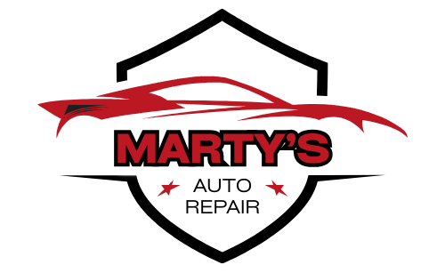

Dent & body repair
Panels and body lines restored from a door ding to major collision damage.

Marty’s Auto Body Services has been on West 25th since 2000. Listen first, inspect properly, then fix what actually needs fixing. No confusing runaround.
Call (212) 255-7654Panels and body lines restored from a door ding to major collision damage.
Color matching, prep, and a durable respray — scuffs to deep scratches.
Starting, charging, lighting, and the alarm that will not quit.
Quick checkups so NYC miles do not become a tow.
mautobody@aol.com · 500 W 25th St, New York, NY 10001